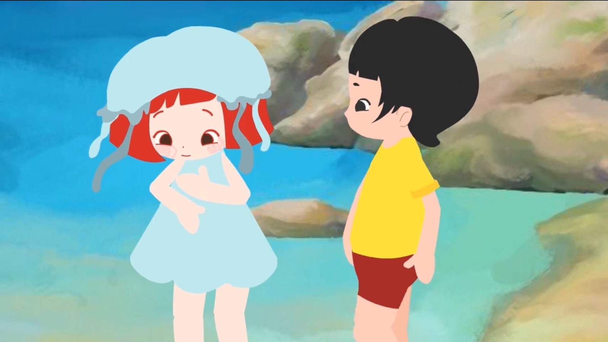
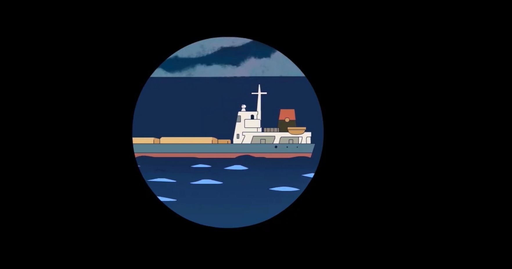
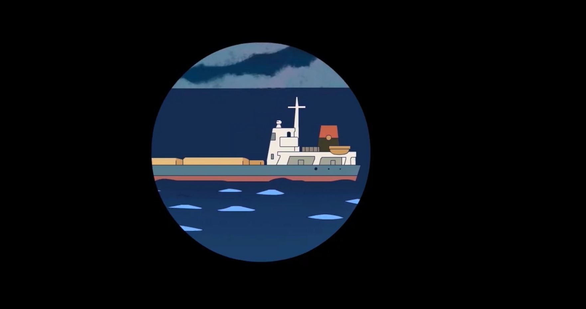
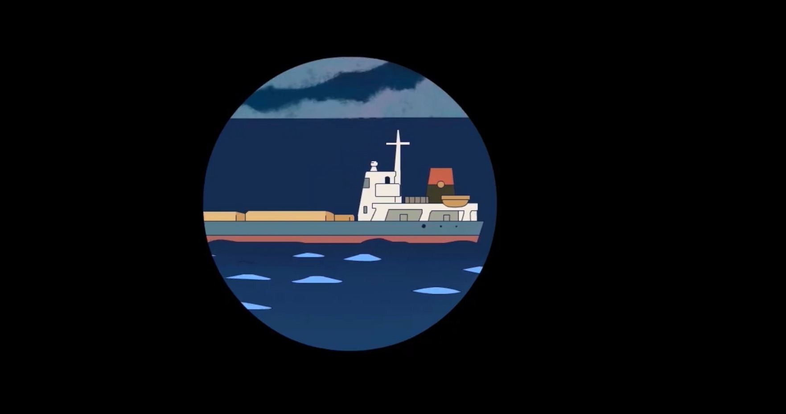

Projects
Rhythmic Radiance
โปรเจค Music visualizer โดยสร้างกราฟิกจุด, เส้น หรือจุดที่เต็มไปด้วยสีสันทำไม่ซ้ำ และรูปแบบเคลื่อนไหวตามจังหวะความดังของเพลงที่เลือก
Process : ประมวลผลผ่าน Processing IDE โดยใช้ sound library เพื่ออ่านข้อมูลเสียงเเละวิเคราะห์ความถี่เเละความเเรงของเสียงที่ input เข้าไป
Automatic Animal Feeder
เครื่องให้อาหารสัตว์อัตโนมัติโดยเมื่อมีสัตว์เข้ามาใกล้ในระยะที่กำหนด servo motor จะทำการเทอาหารตามจำนวนที่ตั้งค่าไว้เเละสามารถกดให้อาหารแบบ real-time ผ่านแอพพลิเคชั่น Blynk
- บอร์ด ESP8266
- สายตัวผู้
- ตัวต้านทาน
- Ultrasonic HC-SR04
- Servo Motor SG90
Fire Jellyfish Animation

 


ออกแบบ Animation ความยาว 1.30 นาที ผ่านโปรแกรม Adobe Animate